Description
The Core Image library for NodeBox adds image manipulation to NodeBox. It’s like having control over Photoshop through simple Python programming commands. Core Image is a Mac OS X specific framework available from Mac OS X 1.4 (Tiger) and up (Leopard, ...). Core Image uses hardware acceleration whenever possible. You can apply filters and transformations to images with a real-time and interactive response. And, since all of the image manipulations are stored in a script, the process is non-destructive. The source images remain unchanged. The script is a recipe you can reuse on different source images.
Download
| coreimage.zip
(1.4MB) Last updated for NodeBox 1.9.5 Licensed under GPL Author: Tom De Smedt |
Documentation
- How to get the library up and running
- Creating a new canvas
- Adding new layers to the canvas
- Retrieving and arranging layers
- Moving and transforming layers
- Adjusting layer brightness, contrast and saturation
- Layer opacity and blending modes
- Applying alpha masks
- Layer filters
- Layer dropshadows
- Working with layer pixels
- Exporting the canvas to JPEG, GIF, PNG or TIFF
- Drawing the canvas in NodeBox
- Working with helpers and interfaces
- Working with images from MorgueFile
- Working with dynamics and caching
- Known issues and limitations
How to get the library up and running
Put the coreimage library folder in the same folder as your script so NodeBox can find the library. It takes some time to load the library the first time.
coreimage = ximport("coreimage")
Creating a new canvas
The canvas() command returns a new, empty canvas. It takes two parameters: the width and height of the canvas. You can set an optional quality parameter to ‘high’ to use 128-bit pixel depth but this is unnecessary in most cases.
canvas = coreimage.canvas(150, 150)
Adding new layers to the canvas
A canvas is a container of many layers which you can position, scale , rotate, blend, filter, etc. You can create layers from image files, fill colors, linear or radial gradients, paths (ovals, text, ...), lists of pixels colors, another layer or canvas (i.e. a group of layers), or Quicktime movie frames.
canvas.append()
The canvas.append() method adds a new layer to the top of the canvas. It is placed at the center of the canvas by default.
canvas.append(filename)
canvas.append(clr)
canvas.append(clr1, clr2, type="linear", spread=0.0)
canvas.append(path, background=None, fill=None, stroke=None, strokewidth=None)
canvas.append([clr1, clr2, clr3, ...], w, h)
canvas.append(layer)
canvas.append(canvas)
canvas.append(layer.render())
canvas.append(canvas.flatten())
canvas.append(open(filename).read())
canvas.append(movieframe)
Examples
Consider we have the following images, leaf.jpg and lily.tif.
leaf.jpg |  lily.tif |
Core Image can use JPEG, GIF, PNG and TIFF images. If you are using images with an alpha channel the best way to import them is as transparent TIFF and not as a PNG (which can have jagged edges in Core Image).

|
A canvas with two layers from image files is easy enough:
l = canvas.append("leaf.jpg") l = canvas.append("lily.tif") canvas.draw()The canvas.append() method has four ptional parameters: the x and y position in pixels and w and h dimensions in pixels. The command returns the layer object. |
Opaque fill layers are created from a standard NodeBox color(). The layer will fill the entire canvas by
default.
l = canvas.append(color(1.0, 0.0, 0.5)) | |

|
Paths from NodeBox can be transformed to a pixel layers
as well. The canvas.append() method has optional path parameters: fill,
background, stroke (black, transparent and transparent colors by default)
and strokewidth.
l = canvas.append(color(1.0, 0.0, 0.5))font(’Georgia-Italic’, 40) p = textpath(’text’, 0, 0) l = canvas.append(p, fill=color(1)) |

|
Linear gradients can be defined as two colors:l = canvas.append(color(1), color(0)) |
| 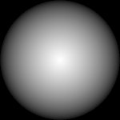 |
Both linear and radial gradients are defined by two colors. If you also define the
optional type parameter as ‘radial’ you get a radial gradient. You control the
range of the gradient center with the optional spread parameter (between 0.0 and
1.0).
l = canvas.append(color(1), color(0), type="radial") |

|
You can also pass another canvas as a new layer. This way you have a subgroup of layers
that stick together.
l = canvas.append(color(0)) group = coreimage.canvas(100, 100) group.append("leaf.jpg") group.append("lily.tif") l = canvas.appebd(group) l.rotate(45) |
 |
If you have some byte data, for example image data downloaded from a site with the
Web library:
web = ximport("web") url = "http://nodebox.net/code/g/header.jpg" image_data = web.download(url) canvas = coreimage.canvas(150, 150) canvas.append(image_data, x=-190) |

|
A layer from individual pixels can be created by supplying a list of colors and a width
and a height (thanks to Duane Bailey):
def fractal(x, y, depth=64): z = complex(x, y) o = complex(0, 0) for i in range(depth): if abs(o) <= 2: o = o*o + z else: return i return 0 #default, black pixels = [] w = h = 150 for i in range(w): for j in range(h): v = fractal(float(i)/w, float(j)/h) pixels.append(color(v/10.0, v/20.0, v/10.0)) l = canvas.append(pixels, w, h) |
If you think canvas.append() is too generic, there are various aliases that make it more understandable what kind of layer you’re creating (all return a new layer): canvas.fill(), canvas.path(), canvas.gradient(), canvas.group(), canvas.bytes(), canvas.pixels().
Layer copies
Existing layers in a canvas can be duplicated. The copy appears right above the duplicated layer:
l = canvas.append("leaf.jpg") dupl = l.duplicate()
You can copy layers from one canvas and append them to another canvas:
offscreen = coreimage.canvas(150,150) l = offscreen.append("leaf.jpg").copy() canvas.append(l)
You can pre-render layers with layer.render() (or a canvas with canvas.flatten()) once and then use them as new layers or in another canvas. The advantage is that all the transformations and filters are calculated only once instead of individually for each copy. You can think of this as ‘flattening’ a layer. See also the chapter on dynamics and caching.
Layer type
You can check what type of layer you are working with using the following properties:
- layer.is_file: a layer created from an image file.
- layer.is_fill: an opaque fill color.
- layer.is_gradient: a linear or radial gradient.
- layer.is_linear_gradient: a linear gradient.
- layer.is_radial_gradient: a radial gradient.
- layer.is_path: a layer created from a NodeBox path.
- layer.is_pixels: a layer created from a list of colors.
- layer.has_layers: a layer created from a canvas object.
- layer.has_shadow: a dropshadow will be rendered for this layer.
- layer.is_mask: a layer that is part of the alpha mask of another layer.
l = canvas.append("leaf.jpg") print l.is_file >>> True
Retrieving and arranging layers
A canvas object acts as a list of layers. With a for-loop you can address each layer it contains:
| 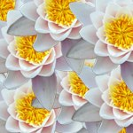 |
for i in range(20): canvas.append("lily.tif") for layer in canvas: layer.x = random(canvas.w) layer.y = random(canvas.h) |
Layers can be named and easily retrieved later on. The canvas.append() method has an optional name parameter. You can then search the canvas for layer names with the recursive canvas.find() command or address layers as canvas properties:
canvas.append("leaf.jpg", name="bg") l = canvas.find("bg") print l.name, l.x, l.y >>> bg, 75, 75
canvas.append("leaf.jpg", name="bg") l = canvas.bg
Layer order
Each new layer is added to the top of the canvas. You can change the ordering of a layer with the following commands:
- layer.up(): moves the layer up one position in the layer stack
- layer.down(): moves the layer down one position in the layer stack
- layer.to_front(): moves the layer to the foreground of the canvas
- layer.to_back(): moves the layer to the background of the canvas
| 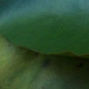 |
back = canvas.append("leaf.jpg") front = canvas.append("lily.tif") back.to_front() |
The layer.index property contains the layer’s position in the canvas. Like any list in NodeBox the indices start from zero:
canvas.append("leaf.jpg") l = canvas.append("lily.tif") print l.index >>> 1
The layer.hide() method excludes the layer from the output:
canvas.append("leaf.jpg") l = canvas.append("lily.tif") l.hide()
Moving and transforming layers
Individual layers in the canvas can be moved, scaled, rotated, flipped, distorted and cropped.

|
You can use a layer’s x and y properties to move it around. These
properties store the layer’s position measured in pixels from the top-left of the
canvas.
canvas.append("leaf.jpg") l = canvas.append("lily.tif") l.x = 0 l.y = 0 |

|
The same can be achieved using the layer.translate() method. This command
accepts two parameters, either absolute pixel values or relative positions between 0.0
and 1.0.
canvas.append("leaf.jpg") l = canvas.append("lily.tif") l.translate(1.0, 1.0) |
You can scale images using pixel size or relative size. By supplying two parameters you
can scale width and height individually.
canvas.append("leaf.jpg") for i in range(10): l = canvas.append("lily.tif") l.x = i*20 l.scale(1.0 - i*0.1) | |
Rotating layers is just as easy:canvas.append("leaf.jpg") for i in range(10): l = canvas.append("lily.tif") l.rotate(i*10) | |

|
There’s also the layer.flip_vertical() and layer.flip_horizontal()
methods of course.
canvas.append("leaf.jpg") canvas.append("lily.tif").flip_vertical() |
The layer.distort() method has optional dx0, dy0, dx1,
dy1, dx2, dy2, dx3, dy3 parameters setting the
displacement of the left top, right top, right bottom and left bottom corners of the
layer (in pixels or between 0.0 and 1.0).
canvas.append("leaf.jpg") l = canvas.append("lily.tif") l.distort(dy0=-500, dx2=-100) | |
 |
The layer.crop() cuts a box from the image, starting from the top left position,
with the given width and height. Images are always cropped before they are rotated,
scaled and distorted.
canvas.append("leaf.jpg") l = canvas.append("lily.tif") l.crop(0, 0, 80, 80) |
Origin point
By default, all layer transformations originate from the layer’s center. However, you can change the layer’s origin point, have the layer rotate from the bottom right corner for example. Let’s turn on some of the visual aids in the Core Image library for a minute:
canvas.draw(helper=True)
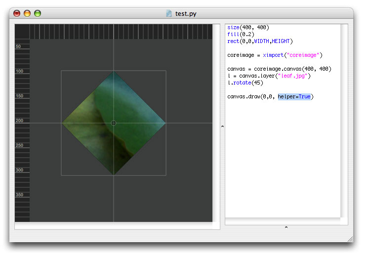
We can clearly see the layer’s bounding box and how it is positioned around the central origin point. The layer rotates from the center. When we call layer.origin_bottom_left() to change the layer’s origin point to the bottom left, rotations will originate from over there. Also, now the layer’s bottom left is at the center of the canvas instead of the layer’s center. Think of the origin point as the layer’s anchor/pivot/orbit.
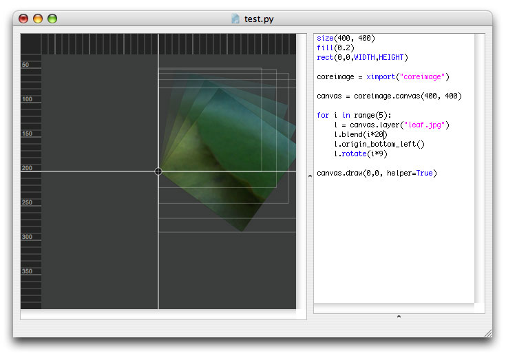
The following commands set the origin point:
- layer.origin_top_left()
- layer.origin_top_right()
- layer.origin_top_center()
- layer.origin_bottom_left()
- layer.origin_bottom_right()
- layer.origin_bottom_center()
- layer.origin_left_center()
- layer.origin_right_center()
- layer.origin_center()
Or you can just use layer.origin() to set it yourself:
print l.origin(0.23, 1.07) >>> (0.23, 1.07)
Layer bounds
To get the bounding box coordinates of layer, use layer.bounds():
print l.bounds() >>> (200.0, 78.647456721610681, 409.52033810627165, 288.167787843871)
To get the width and height of a transformed layer, use layer.size() or the width and height properties. Note that when you manipulate the layer with filters the actual rendered pixels may fall beyond the given bounds.
w, h = l.size() print w, h >>> (209.52033810627165, 209.5203311222603)
print l.width print l.height
You can easily position a layer at the center of the canvas with the layer.center() method:
l.center()
Adjusting layer brightness, contrast and saturation
Aside from placing and transforming multiple layers in a canvas, we can also modify the color information in each layer.
The layer’s brightness property ranges between -1.0 and 1.0:
canvas.append("leaf.jpg") l = canvas.append("lily.tif") l.brightness = 0.25 | |

|
The layer’s contrast property ranges between 0.25 and 4.0:
canvas.append("leaf.jpg") l = canvas.append("lily.tif") l.contrast = 1.5 |

|
The layer’s saturation property ranges between 0.0 and 2.0:
canvas.append("leaf.jpg") l = canvas.append("lily.tif") l.saturation = 2.0 |
The layer.desaturate() method removes all color information:canvas.append("leaf.jpg") l = canvas.append("lily.tif") l.desaturate() print l.saturation >>> 0.0 | |
The layer.invert() method inverts all colors in the layer:
l = canvas.append("leaf.jpg") l.invert() l = canvas.append("lily.tif") l.invert() |
You can set a combination of brightness, contrast and saturation with the layer.adjust() method, which has three optional parameters brightness, contrast and saturation.
Layer opacity and blending modes
Layers can be composited by adjusting their individual transparency or by applying blend modes to create all sorts of effects.

|
The layer.blend() command takes one parameter ranging between 0 and 100 or
between 0.0 and 1.0:
canvas.append("leaf.jpg") l = canvas.append("lily.tif") l.blend(25) print l.opacity >>> 0.25 |
canvas.append("leaf.jpg") for i in range(10): l = canvas.append("lily.tif") l.scale(0.5) l.x = random(canvas.w) l.y = random(canvas.h) l.blend(random()) | |

|
Screen blend displays pixels that are lighter than those underneath.
canvas.append("leaf.jpg") canvas.append("lily.tif", x=50) l = canvas.append("lily.tif", x=100) l.blend_screen() A similar effect is layer.blend_lighten(). |

|
Multiply blend displays pixels that are darker than those underneath.
canvas.append("leaf.jpg") canvas.append("lily.tif", x=50) l = canvas.append("lily.tif", x=100) l.blend_multiply() A similar effect is layer.blend_darken(). |

|
Overlay uses a combination of screen and multiply.
canvas.append("leaf.jpg") canvas.append("lily.tif", x=50) l = canvas.append("lily.tif", x=100) l.blend_overlay() |

|
Soft light uses a combination of darken and lighten.
canvas.append("leaf.jpg") canvas.append("lily.tif", x=50) l = canvas.append("lily.tif", x=100) l.blend_softlight() |

|
Hard light uses a combination of screen and multiply.
canvas.append("leaf.jpg") canvas.append("lily.tif", x=50) l = canvas.append("lily.tif", x=100) l.blend_hardlight() |

|
Applying the hue of the blend layer to layers underneath:
canvas.append("leaf.jpg") canvas.append("lily.tif") l = canvas.append(color(1.0,0.0,0.5)) l.blend_hue(50) |

|
Applying the hue and saturation of the blend layer to layers underneath:
canvas.append("leaf.jpg") canvas.append("lily.tif") l = canvas.append(color(1.0,0.0,0.5)) l.blend_color(50) |
Use the layer.blendmode property to check what blending mode the layer is using.
print l.blendmode >>> multiply
You can set the opacity and blend mode together with the layer.blend() command:
l.blend(25, mode="multiply") print l.opacity, l.blendmode >>> 0.25, color
l.blend("multiply")
The layer.blend_normal() command removes any blend mode from the layer.
Applying alpha masks
The layer’s alpha mask stores information where the layer shines through and where it is opaque. Since the layer.mask property is a canvas object, it’s just as easy to work with alpha layers than it is with normal layers. You can position, transform, adjust, blend and filter them just as any other layer.

|
Applying a linear gradient alpha mask to the lily:
canvas.append("leaf.jpg") l = canvas.append("lily.tif") m = l.mask.gradient() m.rotate(45) |

|
Using a NodeBox path as a mask:
canvas.append("leaf.jpg") l = canvas.append("lily.tif") font("Georgia-Italic", 50) p = textpath("text", 0, 0) m = l.mask.append(p) m.y += 25 |
Using the lily as a mask for a gradient layer:
canvas.append(color(0.4,0.0,0.2)) pink = color(1.0,0.0,0.5) white = color(1.0,1.0,1.0) l = canvas.gradient(pink, white) l.mask.append("lily.tif") | |
Complex mask made up of multiple layers:
l = c.gradient(pink, white) for i in range(3): m = l.mask.append("lily.tif") m.scale(1-i*0.4) m.rotate(20*i) m.blend("softlight") m.filter("zoomblur", amount=i*25) |
Layer filters
The Core Image library supports a number of filters that manipulate the pixels in a layer. Blur and sharpen are standard so you can set these as properties:

|
The layer.blur takes one parameter ranging between 0.0 and 100.0:
canvas.append("leaf.jpg") l = canvas.append("lily.tif") l.blur = 2 |
Sharpening the layer:
canvas.append("leaf.jpg") l = canvas.append("lily.tif") l.sharpen = 10 | |
Other filters use the layer.filter() method:
canvas.append("leaf.jpg") l = canvas.append("lily.tif") l.filter("zoomblur", dx=25) |
Filter reference
There are many other filters like the zoom blur above. Each layer.filter() command
takes its own optional parameters to tweak. Scroll down for visual examples.
Zoom blur
Simulates the effect of zooming the camera while capturing the layer. Parameters are dx,
dy and amount ranging between 0.0 and 200.0.
layer.filter("zoomblur", amount=20, dx=0, dy=0)
Motion blur
Simulates a directional blur. Parameters are radius between 0.0 and 100.0 and
angle.
layer.filter("motionblur", radius=20, angle=0)
Noise reduction
Edges in the layer below a threshold are blurred, edges above are sharpened. Parameters are
noise between 0.0 and0.1 and sharpness between 0.0 and 2.0.
layer.filter("noisereduction", noise=0.02, sharpness=0.4
Bump distortion
Creates a bump or pinch from a point in the layer. Parameters are dx, dy,
radius between 0.0 and 600.0 and scale between -1.0 and 1.0.
layer.filter("bumpdistortion", dx=0, dy=0, radius=300, scale=0.5)
Bump distortion linear | stretch (Mac OS X 10.5 and up)
Creates a bump or pinch from a line in the layer. Parameters are dx, dy,
radius between 0.0 and 600.0, scale between -1.0 and 1.0 and angle.
layer.filter("stretch", dx=0, dy=0, radius=300, scale=0.5, angle=0)
Hole distortion
Pushes the layer’s pixels outwards. Parameters are dx, dy, and a radius
between 0.0 and 1000.0.
layer.filter("holedistortion", dx=0, dy=0, radius=300)
Circle splash distortion
Pushes the layer’s pixels outwards on a circle. Parameters are dx, dy,
radius between 0.0 and 1000.0 .
layer.filter("circlesplash", dx=0, dy=0, radius=150)
Twirl distortion
Generates a wave motion in the layer. Parameters are dx,
dy, radius between 0.0 and 500.0 and angle.
layer.filter("twirl", dx=0, dy=0, radius=150, angle=100)
Circular wrap
Wraps the layer around a transparent circle. Parameters are radius between 0.0 and 500.0
and angle.
layer.filter("circularwrap", radius=150, angle=100)
Kaleidoscope
Generates fractal-like output. Parameters are dx, dy and count between 0
and 100.
layer.filter("kaleidoscope", dx=0, dy=0, count=10)
Triangle tile
Generates fractal-like output. Parameters are dx, dy and angle and
width.
layer.filter("triangletile", dx=0, dy=0, angle=10, width=100)
Parallelogram tile (Mac OS X 10.5 and up)
Generates fractal-like output. Parameters are dx, dy and angle,
width and tilt angle.
layer.filter("parallelogramtile", dx=0, dy=0, angle=10, width=100, tilt=90)
Perspective tile
Distorts the base layer and copies that on a plane. Parameters are dx0, dy0,
dx1, dy1, dx2, dy2, dx3, dy3 representing the corners
of the layer to distort.
layer.filter("perspectivetile", dx0=0, dy0=0, dx1=0, dy1=0, dx2=0, dy2=0, dx3=0, dy3=0)
Starshine generator
A generator that creates stars and sunbursts on the layer (which is usually a transparent
color). Parameters are dx, dy, radius between 0.0 and 300.0,
x_scale between 0.0 and 100.0, x_angle, x_width and epsilon between
-8.0 and 8.0.
layer.filter("starshine", dx=0, dy=0, radius=25, x_scale=10, x_angle=0, x_width=0.5, epsilon=-5.0)
Checkerboard generator
A generator that creates a checkerboard pattern on the layer (which is usually a transparent
color). Parameters are clr1 and clr2 (black and white by default), width between 0.0 and 800.0,
and sharpness between 0.0 and 1.0.
layer.filter("checkerboard", clr1=color(0), clr2=color(1), width=80, sharpness=1.0)
Bloom
Adds a hazy glow to the layer by softening the edges. Parameters are radius between 0.0
and 100.0 and intensity between 0.0 and 1.0.
layer.filter("bloom", radius=10, intensity=1.0)
Pixelate
Divides the image into rectangular cells. It takes one optional parameter scale between
1.0 and 100.0
layer.filter("pixelate", scale=8)
Crystallize
Divides the image into polygonal cells. It takes one optional parameter radius between
1.0 and 100.0
layer.filter("crystallize", radius=20)
Dotscreen
Simulates the dot patterns of a halftone screen. Parameters are dx, dy,
angle between 0 and 360, width between 1 and 50, and sharpness between 0.0
and 1.0.
layer.filter("dotscreen", dx=0, dy=0, angle=0, width=6, sharpness=0.7)
Lighting
Adds a light source to the layer. Parameters are dx0, dy0, dz0 between 0
and 1000 represting the height of the light source, dx1 and dy1 representing
where the light is shining, brightness between 0.0 and 10.0, concentration
between 0.0 and 1.0 representing the cone of the light beam and color.
layer.filter("lighting", dx0=100, dy0=100, dz0=300, dx1=0, dy1=0, brightness=3.0, concentration=0.3, color=None, helper=False)
Shading
Adds texturing to the layer. You can pass it a canvas object to apply as a texture. Parameters
are dx, dy, radius between 0.0 and 300.0 and texture which is a
canvas object.
layer.filter("shading", radius=20, texture=None, dx=0, dy=0)
Line overlay (Mac OS X 10.5 and up)
Simulates a sketch of the layer by outlining the edges in black, after performing noise
reduction. Parameters are noise between 0.0 and 0.01, sharpness between 0.0 and
2.0, intensity between 0 and 200 and contrast between 25 and 200.
layer.filter("lineoverlay", noise=0.07, sharpness=0.71 intensity=1.0, threshold=0.1, contrast=50)
Page curl
Curls a corner of the layer. You can pass the back parameter a canvas object to use as
backside. By default the backside is a mirrored version of the layer. It can also be a color or
‘pattern’, in which case the backside is a triangle-tiled pattern. Parameters are time
between 0.0 and 1.0, radius between 0 and 200 and angle between 0 and 360.
layer.filter("pagecurl", time=0.4, radius=75, angle=45, back=None)
Levels
Provides control over each RGBA color channel in the layer. Parameters are r, g,
b and a which can be numbers between 0.0 and 1.0 or four-tuples if you want to do
complex things like increase the blue inside the R channel.
layer.filter("levels", r=1.0, g=1.0, b=.0, a=.0)
Edges
Finds all the edges in an image and displays them in a color.
layer.filter("edges", intensity=1.0)

|
Applying the zoom blur to the layer:
canvas.append("leaf.jpg") l = canvas.append("lily.tif") l.filter("zoomblur", dy=25) |
| 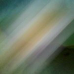 |
Applying the motion blur to the layer:
canvas.append("leaf.jpg") l = canvas.append("lily.tif") l.filter("motionblur", angle=45, radius=50) |

|
Applying noise reduction to the layer:
canvas.append("leaf.jpg") l = canvas.append("lily.tif") l.filter("noisereduction", noise=0.01, sharpness=1.0) |
Applying bump distortion to the layer:
canvas.append("leaf.jpg") l = canvas.append("lily.tif") l.filter("bumpdistortion", scale=0.75, dy=-35) | |

|
Applying linear bump distortion to the layer:
canvas.append("leaf.jpg") l = canvas.append("lily.tif") l.filter("stretch", radius=60, scale=0.0, dy=60) |

|
Applying hole distortion to the layer:
canvas.append("leaf.jpg") l = canvas.append("lily.tif") l.filter("holedistortion", radius=40) |
Applying circle splash distortion to the layer:
canvas.append("leaf.jpg") l = canvas.append("lily.tif") l.filter("circlesplash", radius=45) | |

|
Applying the famous twirl filter to the layer:
canvas.append("leaf.jpg") l = canvas.append("lily.tif") l.filter("twirl", radius=150) |
 |
Applying the circular wrap filter to the layer:
canvas.append("leaf.jpg") l = canvas.append("lily.tif") l.filter("twirl", radius=150) |
Applying a kaleidoscope to the layer:
canvas.append("leaf.jpg") l = canvas.append("lily.tif") l.filter("kaleidoscope", count=5) | |

|
Applying a triangle tile to the layer:
l = c.append("lily.tif") l.filter("triangletile", dx=-30, dy=-30, width=40) |
 |
Applying a parallelogram tile to the layer:
l = c.append("lily.tif") l.filter("triangletile", dx=3, width=40, tilt=-45) |

|
Applying a perspective tile to the layer:
canvas.append("leaf.jpg") l = canvas.append("lily.tif") l.scale(0.6) l.filter("perspectivetile", dx0=50, dy1=30, dy2=-50) |

|
Generating starshine:
canvas.append("leaf.jpg") l = canvas.append(color(0, 0)) l.filter("starshine", x_width=0.3) |
| 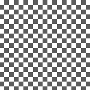 |
Generating a checkerboard pattern:
l = canvas.append(color(0, 0)) l.filter("checkerboard", clr1=color(0.35), width=8) |
Applying a bloom filter:
canvas.append("leaf.jpg") l = canvas.append("lily.tif") l.filter("bloom") | |
 |
Applying rectangular pixelation:
canvas.append("leaf.jpg") l = canvas.append("lily.tif") l.filter("pixelate", scale=7) |
| 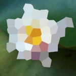 |
Applying polygonal pixelation:
canvas.append("leaf.jpg") l = canvas.append("lily.tif") l.filter("crystallize", scale=15) |
 |
Applying halftone effect:
l = canvas.append("leaf.jpg") l.filter("dotscreen") l = canvas.append("coreimage-flower.png") l.filter("dotscreen") |

|
Applying lighting:
canvas.append(color(0)) l = canvas.append("lily.tif") l.filter("lighting", dx1=-55, dy0=55, dz0=45) |

|
Applying shading:
canvas.append(color(0)) p = supershape.path(50, 60, 60, 60, 12, 2, 0.7, -2) l = canvas.append(p, fill=color(1)) l.filter("shading", dx=31, radius=5.0) |

|
canvas.append(color(0)) p = supershape.path(50, 60, 60, 60, 12, 2, 0.7, -2) l = canvas.append(p, fill=color(1)) t = coreimage.canvas(150, 150) t.append("lily.tif") l.filter("shading", dx=31, radius=20.0, texture=t) |

|
Applying line overay:
canvas.append(color(0)) l = canvas.append("leaf.jpg") l.filter("lineoverlay", noise=0.08, sharpness=0.1, threshold=0.3, contrast=2, intensity=1) |
| 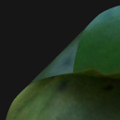 |
Applying a page curl transition:
canvas.append(color(0)) l = canvas.append("leaf.jpg") l.filter("pagecurl", time=0.55, angle=45, radius=60) |
| 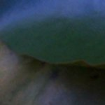 |
Applying color level adjustments:
l = canvas.append("leaf.jpg") l.filter("levels", g=0.6, b=1.6) |

|
Using levels for a custom dropshadow (with zoomblur for exanple):
canvas.append("leaf.jpg") l = canvas.append("lily.tif") l.filter("levels", r=0, g=0, b=0) l.filter("zoomblur", dx=-20, dy=40) l.blend(75) l.x += 10; l.y += 10 l = canvas.append("lily.tif") |
| 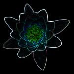 |
Finding edges:
canvas.append(color(0)) l = canvas.append("lily.tif") l.filter("edges", intensity=2.0) |
Filter aliases
All the information about filters and their parameters is stored in the canvas renderer. Take a look at:
print canvas.renderer.aliases.keys() >>> ['starshine', 'shading', 'bumpdistortion', 'zoomblur', 'motionblur', >>> 'levels', 'twirl', 'perspectivetile', 'lighting', >>> 'bloom', 'kaleidoscope'] print canvas.renderer.aliases["levels"] >>> CIColorMatrix print canvas.renderer.filters["CIColorMatrix"] >>> {'a': 1.0, 'interface': False, 'r': 1.0, 'b': 1.0, 'g': 1.0}
Layer dropshadows
You can add a shadow to each layer in the canvas, in the same way as you can add a shadow to NodeBox primitives with the Colors library:
layer.shadow(dx=10, dy=10, alpha=0.75, blur=8)

|
Default dropshadow:l = canvas.append("leaf.jpg") l = canvas.append("lily.tif") l.shadow() |
Working with layer pixels
To create a canvas layer from a list of pixel colors, use canvas.append() as explained in the section on adding layers.
You can access individual pixels in a layer or retrieve information about the minimum, maximum and average pixel values. The layer.pixels() gives you a pixels object that is a list of colors with some extra methods: pixels.min(), pixels.max(), pixels.average(), and pixels.get_pixel(), pixels.set_pixel() and pixels.get_range(). These return a color.
l = canvas.append("leaf.jpg") p = l.pixels()
print p.is_rgb() >>> True
print p.has_alpha() >>> False
print "min:", p.min() print "max:", p.max() print "avg:", p.average() >>> min: color(0.02, 0.03, 0.00) >>> max: color(0.44, 0.54, 0.49) >>> avg: color(0.18, 0.31, 0.19)
print p.get_pixel(100, 100) >>> color(0.09, 0.11, 0.03)
print p.w, p.h >>> 150, 150
There’s also a pixels.set_pixel(). It takes an x and y position
and a color as parameters. When you modify pixels in this way, changes will not
automatically be committed to the layer. You need to explicitly call
pixels.update() on the pixels object when you’re done modifying. Also, remember
that pixel operations can be time and memory intensive.
p = l.pixels() p.set_pixel(100, 100, color(0,1,0)) p.update()
The pixels.get_range() method returns a list of colors. It takes x and y and w and h parameters. This way you can select a rectangular box of pixels from the layer.
As a fun experiment we can transform the pixels to NodeBox vector rectangles. We measure the RGB values in every tenth pixels and apply those colors to a grid of 10 x 10 rectangles:

Pixel histogram
The pixels.histogram() extracts a histogram from the layer’s pixel data. The return value is a list with either three (R, G and B) or four (R, G, B, A) elements. Each element is a list of 254 elements ranging between 0.0 and 1.0. For example: if pixels.histogram()[0][100] would be 0.0, this means that the layer has no pixels where the red is 100. If pixels.histogram()[1][10] would be 1.0, this means that the layer’s pixels usually have a green value of 10.
Let’s have a look at the pixel values of the leaf image using another one of the visual aids in the Core Image library:
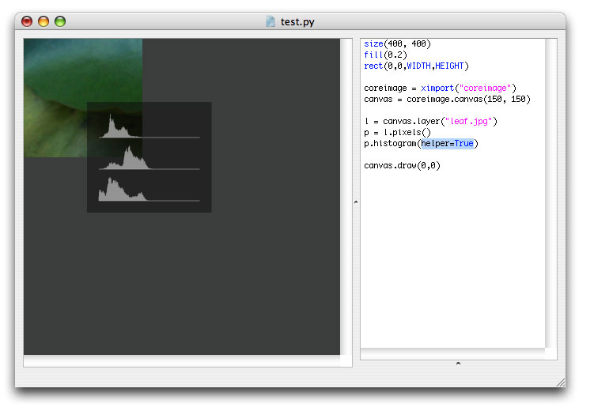
Exporting the canvas to JPEG, GIF, PNG or TIFF
It’s easy to export the canvas as an compressed image for the web or a TIFF with CMYK colors. If your image has few different colors (e.g. opaque color planes with text) you can use export a lossless GIF for the web. If your image contains photos, use a JPEG with compression. When you are going to paper print your image, use a CMYK TIFF.
A JPEG for the web with 40% compression:
canvas = coreimage.canvas(150, 150) l = canvas.append("leaf.jpg") l = canvas.append("lily.tif") canvas.export("flower.jpg", compression=0.6) | |
A TIFF in CMYK with LZW-compression:
canvas = coreimage.canvas(150, 150) l = canvas.append("leaf.jpg") l = canvas.append("lily.tif") canvas.export("flower.tif", cmyk=True, compression=True) | |
A PNG image with a transparent background:
canvas = coreimage.canvas(150, 150) l = canvas.append("lily.tif") canvas.export("flower.png") | |
A GIF image file:
canvas = coreimage.canvas(150, 150) l = canvas.append(color(1.0, 0.0, 0.5)) font("Georgia-Italic", 40) p = textpath("text", 0, 0) l = canvas.append(p, fill=color(1)) canvas.export("flower.gif") |
Some important things to know:
-
A generic CMYK profile is used. This means that the canvas renderer makes no attempt to correctly remap colors that are outside the CMYK scope: pure RGB red and other high intensity colors may contain pixel errors. This is especially true for layers created from paths. It is your responsibility to create paths in CMYK-safe colors. Usually everything is OK so long as you use paths created with NodeBox color() colors.
- When you export Core Image compositions from the NodeBox file menu, PDF export won’t work
under Mac OS X 10.5. You can export JPEG, GIF and PNG however.
Drawing the canvas in NodeBox
Merging all the layers in a canvas and drawing the result in NodeBox is easy:
canvas = coreimage.canvas(150, 150) l = canvas.append("leaf.jpg") l = canvas.append("lily.tif") canvas.draw(0, 0)
The canvas.draw() command takes two optional parameters: the x and y position.
Note that when you export a PDF that contains a canvas with a transparent background it
might have pixel errors.
Working with helpers and interfaces
Some things in the Core Image library are a little hard to do or grasp without visual feedback. That’s why the library has a few helpers and interfaces. There’s a helper for the canvas.draw() command that displays rulers and a bounding box for each of the layers. It’s already shown in the documentation on transforming layers. There’s also a helper for the pixels histogram shown in the documentation on working with pixels.
Furthermore, there’s a helper for the lighting filter. The helper makes it a bit easier to determine where the light source is positioned and what parameters like dz0 and concentration do.

With each filter you can use the interface parameter to get NodeBox sliders that control the options for the filter. It’s a convenient way to get to know how each filter works.

Notice how each parameter you normally define in code is now replaced by a handy slider.
Working with images from MorgueFile
The Core Image library includes a tool to download images from MorgueFile. MorgueFile is an online archive of freely contributed photographs. To use MorgueFile images in NodeBox, you need to add the morguefile.py library to the folder where your script is located. You can then query MorgueFile and download images to a specified folder.

The morguefile.search() command returns a list of images on MorgueFile on the given query, It has an optional parameter max specifying the maximum number of images to return.
from coreimage import morguefile images = morguefile.search("leaf", max=10)
Each item in the returned list has a number of properties:
- img.id: the unique MorgueFile ID for the image
- img.category: the category the image belongs to
- img.author: the name of the author
- img.name: the image’s name
- img.url: the URL of the image thumbnail
- img.date: the date the image was added to MorgueFile
- img.views: the number of times the image has been viewed
- img.downloads: the number of times the image has been downloaded
for img in images: print img.name, img.views >>> DSCN6707.JPG 8 >>> keegan_2006_1015random0106.JPG 10 >>> Img2006-10-08-132310.jpg 611 >>> climb_a_tree_2006_1015random0086.JPG 17 >>> missyredboots111.jpg 14 >>> IMG_6852.jpg 403 >>> Fallen_Star.JPG 25 >>> JGS_mF_FloatingInDarkness.jpg 30 >>> leaf_n.JPG 18 >>> drift_away__.jpg 103
You can use the img.download() method with any of these image objects. This command takes two optional parameters: path specifying in what folder to put the image (if the folder doesn’t exist it will be created) and thumbnail, which when True downloads a small thumbnail instead of the image itself.
The command returns the pathname of the image, which is the specified path + the name of the author + the name of the image.
print images[0].download("images") >>> images/dineshtilva_DSCN6707.JPG

You can then start using the image as a canvas layer.
There’s also the morguefile.search_by_author() command which looks for images by author name.
Working with dynamics and caching
You can create a cached screenshot from a layer or a canvas. This means Core Image will render the layer or canvas with all its transformations, masks, adjustments and filters and return it as an object stored in memory instead of drawing it to the screen. You can then reuse that object as a layer in a canvas. This way you can incrementally stack effects in a fast animation.
The layer.render() and canvas.flatten() methods return a cached screenshot.
You can pass this screenshot to the canvas.append() command. Then you can stack new
effects on the transformed layer, take a screenshot of it, apply more filters to it, and so
on.
|
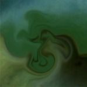 |
speed(30) def setup(): global cache cache = None def draw(): canvas = coreimage.canvas(WIDTH, HEIGHT) global cache if not cache: cache = canvas.append("leaf.jpg") else: cache = cache.render() cache = canvas.append(cache) cache.filter("twirl", radius=random(30,40), dx=random(-40,40), dy=random(-40,40)) canvas.draw() |

{kind=link}
Try out some other examples bundled in the library download. You may notice that incrementally applying filters and effects to layers makes them blurry.
Known issues and limitations
The library is currently in alpha stage and has some known issues and limitations:
-
Exporting a PDF with a canvas that has a transparent background might contain pixel errors.
-
Exporting a CMYK TIFF uses a Generic CMYK profile. This means that the canvas renderer makes no attempt to correctly remap colors that are outside the CMYK scope: pure RGB red and other high intensity colors may contain pixel errors. This is especially true for layers created from paths. It is your responsibility to create paths in CMYK-safe colors. Usually everything is OK so long as you use paths created with NodeBox color() colors.
-
Using the layer.distort() command in combination with layer filters displaces the layer from the origin, because the bounding box of a layer does not take filters into account. This means that the layer will no longer correctly display at the position you specified. An easy way to overcome this is to call layer.filters_first(False) to first render the distort and then apply the filter.
-
Combining different filters might sometimes produce no output or crash NodeBox. If you are experiencing strange behaviour, try quitting and reopening NodeBox so the Core Image library has a chance to reload itself.
-
Some filters are kinda quirky, especially the motion blur filter and perspective tile.
-
If you rotate a canvas drawn in NodeBox using transform(CORNER) it rotates from the bottom left corner instead of the top left corner.
- Core Image might run very slow or even halt NodeBox when exporting multiple PDF’s or
animations from a complex canvas. Exporting image files leaks memory as well (which can
result in kernel panic). I haven’t found a solution yet - there’s a problem when calling
CIContext().drawImage. For now, don’t export movies/PDF’s/images in batch (e.g. a
thousand in one roll), or use an external screen capture tool like IShowU.